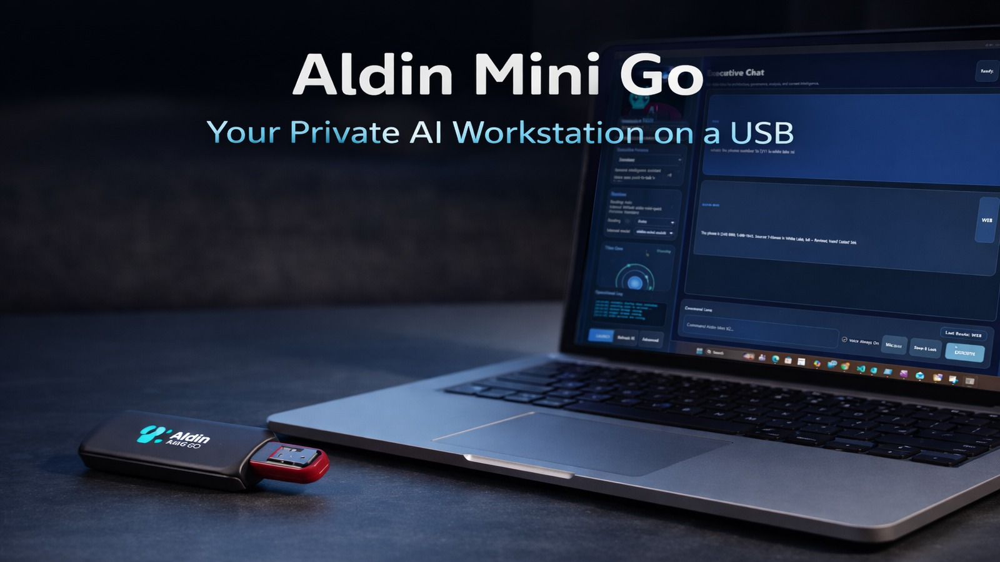
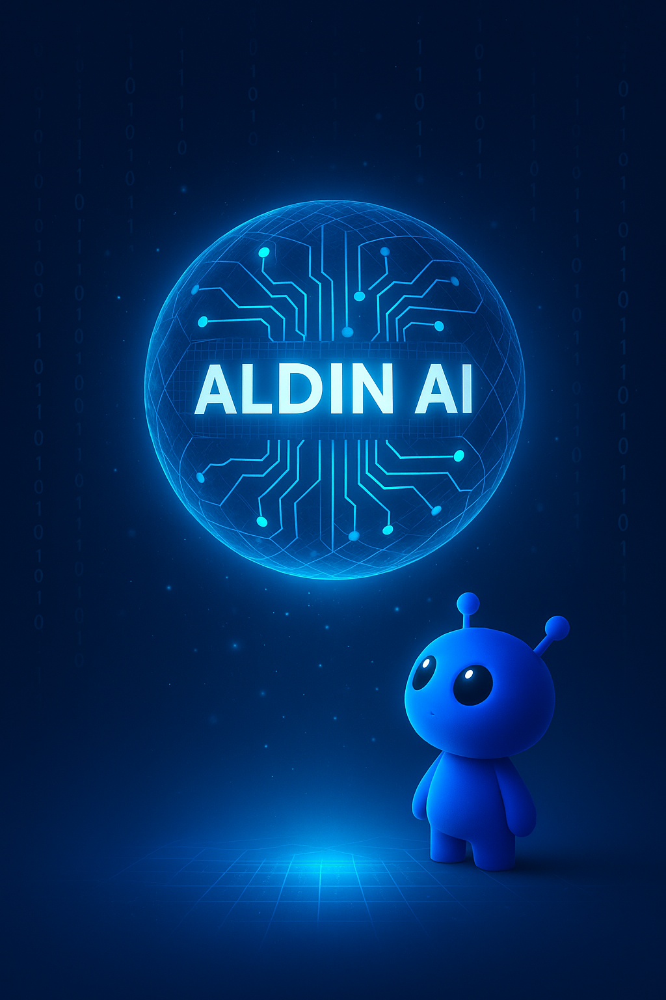

Portable setup
Main Mini Go product view.
Aldin AI builds practical AI products that help people work with data, learn faster, protect privacy, and bring useful intelligence anywhere.

From a portable USB AI workstation to adaptive student help and enterprise-grade synthetic data, Aldin AI is focused on one thing: making AI useful in the real world without sacrificing privacy, trust, or control.
Your private AI workstation on a USB. Built for local AI chat, offline-capable workflows, web search when connected, document intelligence, memory, and professional deliverables.
Run private assistant workflows from a portable workspace.
Ingest documents and use them as context for smarter answers.
Use web search when fresh information matters, then return to private work.

Drop future Mini Go screenshots or product photos into images/mini-go/, then add more cards here without changing the rest of the page.
Main Mini Go product view.
Use images/mini-go/mini-go-angle-1.jpg.
Use images/mini-go/mini-go-ui-1.jpg.
Keep adding demos here as you record better walkthroughs, Kickstarter clips, field demos, and founder overviews.
Overview of the Aldin Mini Go private AI workstation experience.
Real-world walkthrough showing Aldin Mini Go running from the USB setup.
Aldin AI is building a connected ecosystem across portable AI, education, data quality, governance, and synthetic data.
A private USB-based AI workstation for local chat, documents, memory, web search, and professional deliverables.
Explore Mini Go
Adaptive student support with voice, avatar interaction, parent controls, and curriculum-aligned learning help.
Try ASHER
Privacy-preserving synthetic data innovation for safer testing, analytics, AI development, and enterprise modernization.
Discuss GenesisAldin AI bridges frontier AI thinking with practical deployment. The company focuses on products that help organizations, learners, and builders unlock value from data while keeping privacy and trust at the center.
Local and controlled workflows when data cannot simply be sent anywhere.
Tools designed to produce documents, insights, workflows, and decisions.
Built from deep experience in data architecture, governance, and quality.
AI that supports learners, professionals, families, and builders.

Aldin AI LLC was founded by Salah A. Mokhayesh, a 20-year enterprise data architecture leader with experience across General Motors, OnStar, Rocket Mortgage, and large-scale data governance initiatives.
The mission is simple: turn complex AI and data challenges into useful, trustworthy products that people can actually deploy.
Interested in Aldin Mini Go, ASHER, Genesis, pilots, partnerships, or private AI product development? Reach out directly.